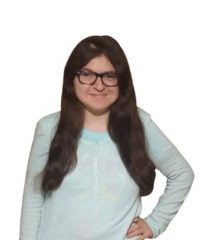
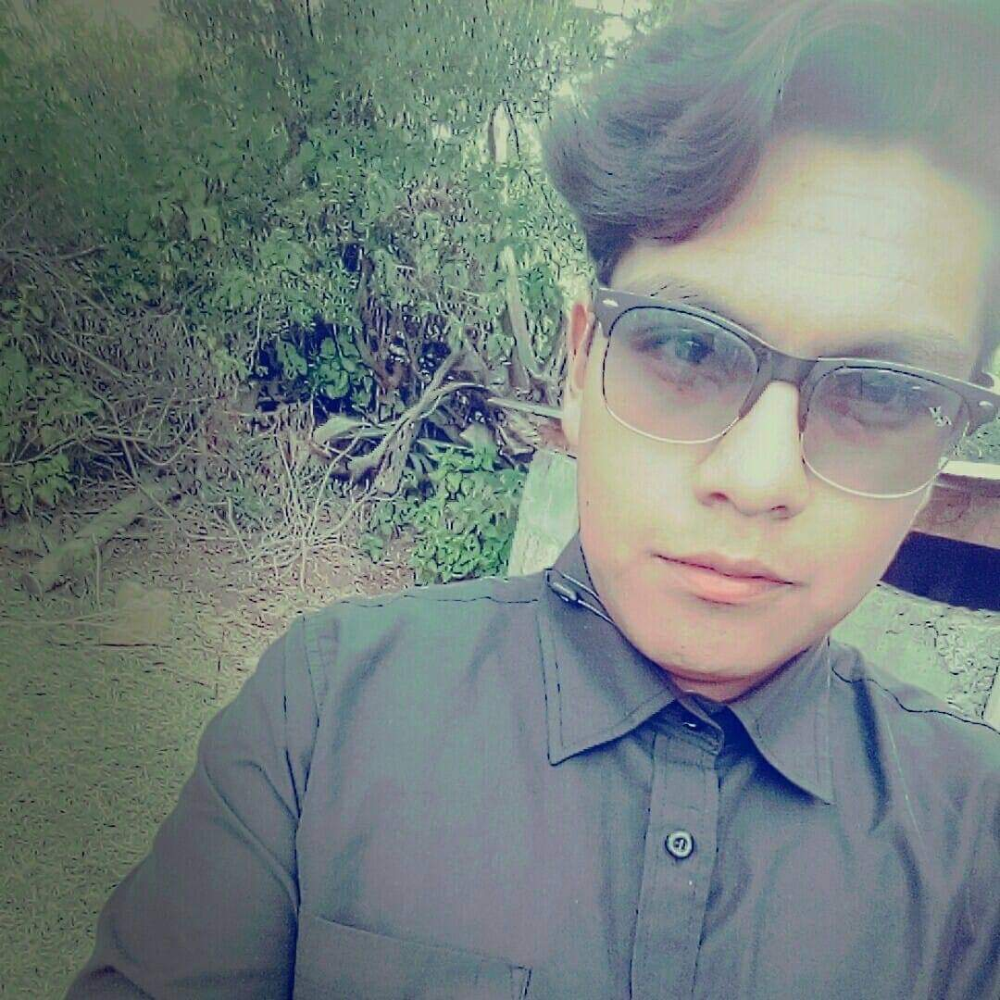
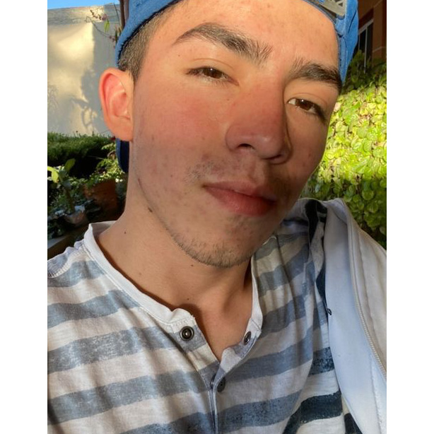

¿QUIENES SOMOS?
Erick Alejandro Monroy Malpica
Estudio sistemas computacionales UVEG

Marisol Ponce
Pedagogía con experiencia en educación virtual

Joel Martínez Reveriano
Estudió Ingeniería Civil en la UAM AZC

Felipe Reyes Miguel
Estudió Ingeniería En Computacion en la UAEM

Sergio Emmanuel Rodriguez
Y JUNTOS SOMOS
DIIN representa la Inclusión e integral de personas con discapacidad en contextos de viajes con enfoque incluyente.
"Si eliminamos las barreras del entorno la discapacidad no es un obstáculo sino un cruce hacia viajes incluyentes." Autor Equipo Diintravel
Viajes inclusivos e incluyentes
• ¿Qué reto abordamos? Ausencia de la inclusión y accesibilidad con sus herramientas y servicios para los viajes navidad de las Personas Con Discapacidad en la CDMX
• ¿Qué ES?
• Una plataforma web donde existe una variedad de herramientas e información sobre lugares accesibles e incluyentes durante viajes, Estas herramientas se dividen en 3 áreas de servicios:
• Acompañamiento para el diagnóstico hasta implementación de un espacio lugares que quieren ser inclusivos: normativos, documentos y herramientas necesarias
• Recomendaciones para personas con discapacidad para encontrar establecimientos como hoteles, restaurante y opciones transporte para vacacionar logrando una aventura incluyente.
• Cursos y talleres basados contenidos formativos e informativos para sensibilizar y concientizar sobre las necesidades, herramientas junto a los servicios para lograr una inclusión por parte los restaurantes y hoteles para que sean lugares inclusivos
"¿Quién es DIIN? Un perrito y amigo de una persona con discapacidad. Ambos enfrentar una triple barrera:
• Reconocer su discapacidad que no es una limitante para viajar adquiriendo la información, acompañamiento y servicios iniciar la planeación y disfrutar sus vacaciones.
• Ausencia de la inclusión y accesibilidad con sus herramientas y servicios para los viajes
• Orientar a los encargados de los espacios físicos de servicios de viajes para los visitantes y como centros laborales para ofrecer una adecuada atención resultado de la formación de sus trabajadores alcanzando ser un establecimiento accesible e incluyente
• Somos un emprendimiento social y tecnológico a favor de la inclusión personas con discapacidad y limitaciones salud para con deseos de disfrutar los viajes incluyentes. Por eso, orientamos a Diintravel a explicarles a los trabajadores el diagnostico de ser un lugar accesible e incluyente, desarrollando, implementando y evaluando la inclusión dentro de su establecimiento o comercios con la capacitación con basada en contenidos formativos lúdicos y accesible para un buen trato.